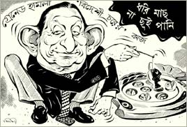

|
Jainiul Abedin Commission Report Submitted to the Government

Chairman of the one man commission, Justice Jainul Abedin yesterday (01. 10. 04) submitted his report of 21st August grenade attack on AL sponsored mass assembly at Bangabandhu Avenue to the Secretary, ministry of home affairs (not even to the state minister). The incident in presence of hundreds of police and ever alert RAB forces & officers and intelligent agencies took at least 25 lives including that of Ms Ivy Rahman, a top AL leader and injured several hundreds some them were very seriously still carrying hundreds of splinters inside their bodies. The very nature of the formation of the committee indicated that it was just eyewash having no seriousness on the part of the government. AL seeing the motif of Khlaeda_Nizami Government very rightly rejected the commission and decided not to co-operate with its proceedings. In spite of the attitude of AL and other opposition parties, the one man commission, which may be termed as in Bengali proverb ‘Dhal nai toloar nai, Nidhiram Sardar (Nidhiram Sardar, the captain without sword and shield went ahead with its fact finding and probing mission. Justice Abedin claimed boastfully that although AL did not cooperate with his mission he acted as a neutral person, not toeing with line of the desire of the government. Abedin admitted that his terms of reference were limited and he does not have the authority (any courage? Mr. Justice). Government had made no hide & seek of its intention. Begum Khaleda and her General secretary once a left politician, a follower of fiery Moulana Bhasani public stated that the in the incident there were likelihood of a third force (meaning a force from outside) with the intention of destabilizing the country. Commission report as said by the chairman himself in a press conference held yesterday contained such findings. It so said that aim of the act was to create confusion and instability of the country. By creating confusion and instability by a third force who would be the beneficiaries. I am sure justice has neither the courage nor the means to pinpoint the third force and likely beneficiaries. The salient points of the commission report that came out from the tit bit comments of the chairman may be summarized as follows:
I better not waste my time quoting the recommendations, which never be followed either by the government or the police and intelligent departments. Some recommendations are childish (e.g. A close relation to cultivate among the important parties). The learned justice also wished like an innocent baby that for the sake of national interest the political parties should work together and develop closer ties among themselves. This kind of cooperation must be coming from the civil society too. The non-cooperation to the commission on the part of the AL has been termed as ‘unfortunate’. The commission is unable to public its report on its own because of its limited power, which our public understands. Mr. Justice you followed the letter of the act, not its spirit. For whom a commission is constituted? Obviously for public as it is the ultimate source of power. This is the problem with justices; they fail to see a bit beyond. It is sure that like other reports of various commissions this would also not see ‘light’. Mr. Justice Abedin should have not taken this job on three counts : firstly, he has some pro government image (right or wrong is a different matter), secondly AL for whatever reason when questioned his efficiency and credibility, and rejected its formation that on the plea that its report would not be ‘neutral’, as a judge he should have felt embarrassed and rejected the offer, thirdly, as he knew very that his commission has neither proper man power nor logistics to investigate such a serious matter. As for example when he alleged that a third force might be involved with local agencies, can he substantiate this serous matter with proofs? When he mentioned some names of leaders and workers of a political party, who acted as stooges of a foreign power, can he substantiate his allegations? Who is that foreign power? Could a responsible government publish such a name of a foreign force? Most unlikely. The government will give effect of those wordings of the commission, which could be applied against AL on its toe. Thank Mr Justice for your neutral role and the report, which has been prepared from a hypothesis, as pointed out by our great self-made Marxist diplomat and journalist Mr. Eanyetullah Khan, New Age editor. |
||||